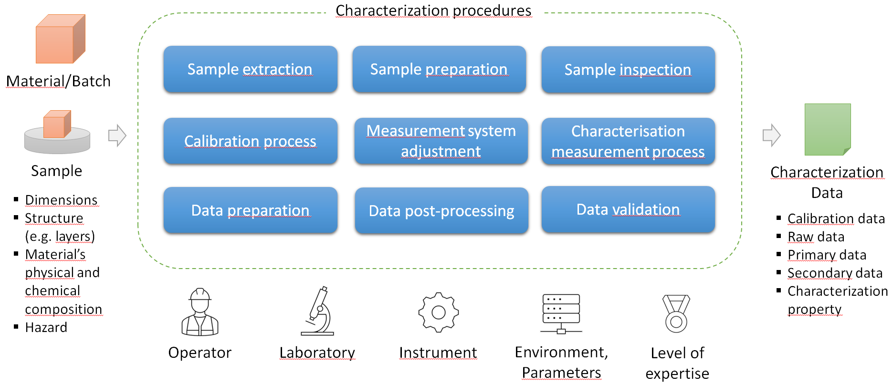
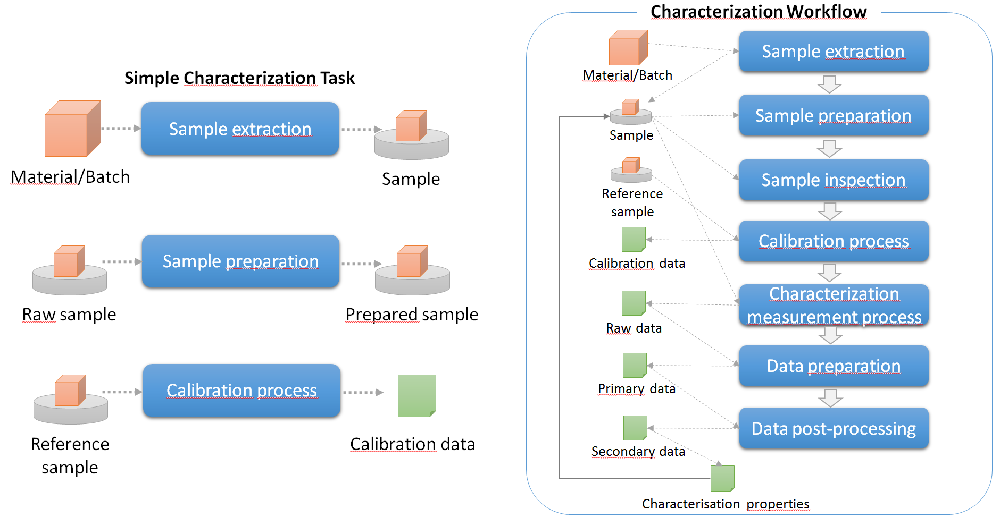
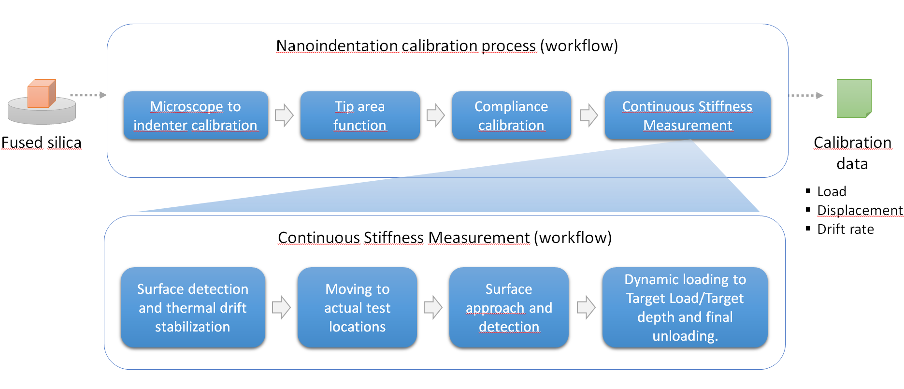
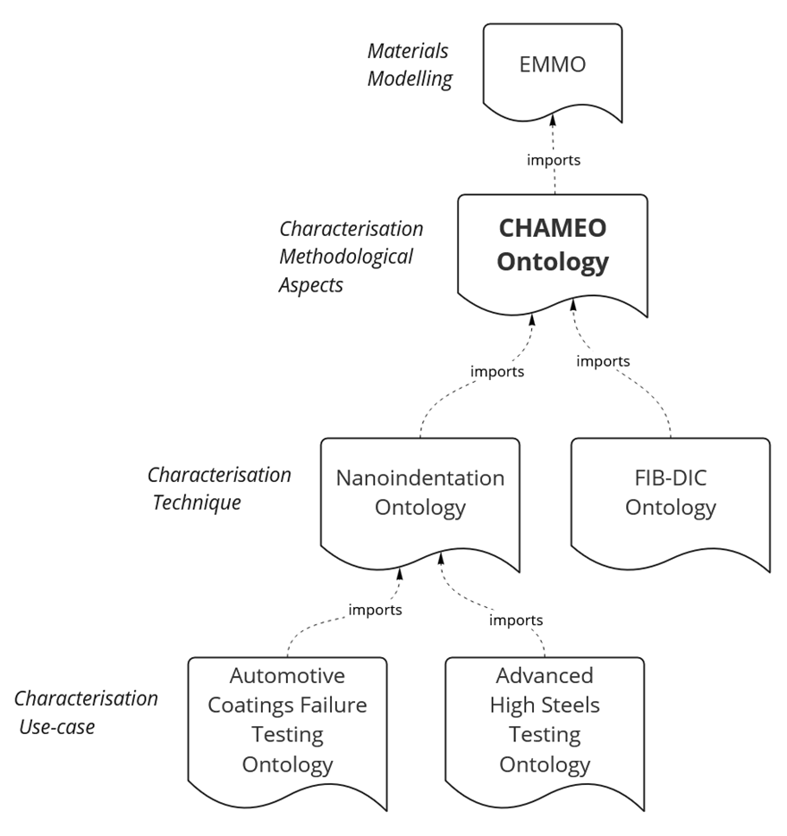

The CHAracterization MEthodology Ontology (CHAMEO)#
Overview#
The CHAracterization MEthodology Ontology (CHAMEO) ) is a domain ontology designed to provide a clear, harmonized, machine-readable representation of materials characterization techniques and experiments.
CHAMEO’s Main Concepts#
CHAMEO includes all the basic concepts of the characterization domain:
{kind=link}
Material/Batch
Sample:
Can be a material or a device
The different statuses of a sample are modelled (raw, prepared, intermediate, characterised)
The structure (e.g. multi-layered material) and the physical/chemical composition
The hazard
Characterization Procedures: These are the building blocks that can be part of a characterization experiment. This encompasses all the procedures from the batch to the characterization properties, including sample extraction, preparation and inspection, calibration and parameters adjustment, measurement, data pre/post processing ad data validation. with details about:
Operator, Laboratory
Instrument:
Standardized descriptions of characterization instruments (e.g., electron microscopes, X-ray diffractometers, spectrometers).
Properties of instruments, such as manufacturer, model, and operational parameters.
Environment conditions
Parameters:
Specification of key parameters used in experiments (e.g., voltage in electron microscopy, wavelength in spectroscopy, load in mechanical testing).
Representation of units and values in accordance with scientific standards.
Level of expertise required
Characterization data: The different types of data that are produced during a characterization experiment.
Characterization techniques: CHAMEO includes a taxonomy of different characterization techniques (e.g., microscopy, spectroscopy, diffraction, mechanical testing). This taxonomy is based on the Materials Resource Registry from the National Institute of Technology and enhanced with additional techniques.
Characterization Workflow and Tasks#
CHAMEO can be used to describe single Characterization Tasks, such as the extraction of the sample from a batch, the preparation of the sample or the calibration process, as well as more complex Characterization Workflows as a composition of different Characterization Tasks exchanging data. The picture below describe a generic Characterization Worlkflow.
{kind=link}
Each Characterization Task composing a Workflow can be further decomposed (becoming a workflow itself) until the desired level of details. Here below, the example of a Nanoindentation calibration process with a Continuous Stiffness Measurement task that is further detailed.
{kind=link}
Motivation and Purpose#
In materials science, characterization methods are essential for determining the properties and behavior of materials. However, the diversity of techniques and data formats across laboratories, institutions, and industries creates significant challenges for:
Data interoperability: Different formats and terminologies make it difficult to integrate data from multiple sources.
Knowledge representation: A lack of standardization leads to inconsistencies in how information is recorded and interpreted.
Reproducibility and reusability: Without a shared framework, experimental results may be difficult to reproduce or reuse effectively.
CHAMEO addresses these challenges by providing a common semantic framework that defines standardized terms, relationships, and structures for representing materials characterization data. By doing so, it facilitates:
Improved data sharing: Researchers and organizations can exchange characterization data more easily.
Enhanced knowledge discovery: Semantic relationships between different methods and results enable better insights and data mining.
Greater reproducibility: Standardized descriptions help ensure that experiments can be replicated accurately.
Design approach#
{kind=link}
CHAMEO is aligned with the Elementary Multiperspective Material Ontology (EMMO), ensuring compatibility with other EMMO-based ontologies and promoting interoperability across different domains of material science.
CHAMEO serves as a structured framework that models the generic methodological aspects that are in common across the different characterization techniques.
The ontologies, modelling the different characterization techniques can be developed by specialising the CHAMEO definitions.
Specific characterization use-case ontologies can be then implemented based on the technique ontologies (e.g. industrial use cases).
This follows a modular design approach that increases the level of reusability and interoperability.
Core Structure of CHAMEO#
CHAMEO is designed as a modular ontology that models the essential elements of characterization methodologies. Its core components include:
1. Characterization Methods#
Representation of different materials characterization techniques (e.g., microscopy, spectroscopy, diffraction, mechanical testing).
Classification of methods based on their purpose (e.g., structural analysis, chemical composition analysis, mechanical property evaluation).
2. Instruments and Equipment#
Standardized descriptions of characterization instruments (e.g., electron microscopes, X-ray diffractometers, spectrometers).
Properties of instruments, such as manufacturer, model, resolution, and operational parameters.
3. Measurement Parameters#
Specification of key parameters used in experiments (e.g., voltage in electron microscopy, wavelength in spectroscopy, load in mechanical testing).
Representation of units and values in accordance with scientific standards.
4. Sample Representation#
Ontological modeling of materials and samples under investigation.
Descriptions of sample properties, preparation methods, and environmental conditions during testing.
5. Experiment Results and Outputs#
Representation of data outputs, including images, spectra, and numerical datasets.
Links between raw data and processed results for reproducibility.
Applications of CHAMEO#
CHAMEO is useful in multiple applications, including:
Research and academia: Standardizing characterization data in scientific publications and research projects.
Industry and manufacturing: Ensuring consistency in quality control and materials testing across different facilities.
Data integration platforms: Facilitating the development of knowledge graphs and databases for materials science.
Machine learning and AI: Providing structured data representations that enhance AI-driven analysis and automation in materials research.
Future Developments#
CHAMEO is a continuously evolving ontology. Future updates will focus on:
Expanding coverage to additional characterization techniques.
Enhancing alignment with other domain ontologies within EMMO.
Improving interoperability with existing materials data repositories and knowledge graphs.
Developing tools and APIs for easier integration into scientific workflows.
For more information, refer to the publication: CHAMEO: An ontology for the harmonisation of materials characterization methodologies (DOI: 10.3233/AO-220271).
Acknowledgements#
This project has received support from European Union research and innovation programs, under grant agreement numbers:
952869 - NanoMECommons
License#
The CHAracterization MEthodology Ontology (CHAMEO) is released under the Creative Commons Attribution 4.0 International license (CC BY 4.0).